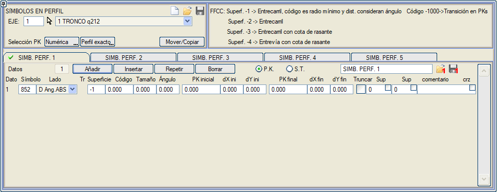
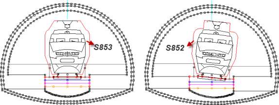
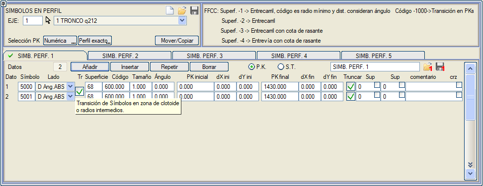
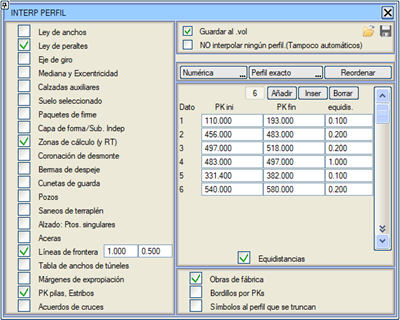

Bu araç, enkesitlere otomatik olarak sembol ekleme komutlarını hazırlayan bir diyalog kutusu açar. Amacı, enkesitlerde bariyerleri, elektrik direklerini, çitleri ve genel olarak kullanıcının istediği herhangi bir sembolü temsil etmektir. Bu semboller enkesit dosyasına yazılır ve dolayısıyla enkesit çizimi komutu verildiğinde temsil edilir.
Yol Çizgileri tarzında, verilerin daha iyi organize edilmesini sağlayan beş sekmemiz bulunmaktadır. Taşı/Kopyala düğmesi, verileri sekmeler arasında taşımaya olanak tanır. Bir sekmeyi kaydetme/yükleme imkanı vardır.

Her sekmede, sembolün konumlandırmasının KM aralığına göre mi yoksa Tip Kesite göre mi tanımlanacağı seçilebilir.
KM seçimi sayısal olarak veya ekrandan tıklayarak, tam bir enkesitte veya enterpolasyon yoluyla girilebilir.
Eklenen her sembol için aşağıda açıklanan bir dizi kontrol bulunur:
- Sembol: Kütüphanedeki sembol numarasıdır (örneğin, 309, dairesel bir drenaj borusuna benzeyen S309 sembolüdür, S308 demiryolları için bir katener direğidir, vb.). Program kütüphanesinde, S840, S842, S843, S844, S845,... gibi bu seçenek için uygun çeşitli ölçeklenebilir semboller mevcuttur.
- Taraf: Bu kutucukta, sembolün sağ tarafta mı, sol tarafta mı yoksa her iki tarafta mı olacağı ve verilen yönelim açısının yataydan (mutlak açı), dever eğiminden (göreceli açı) veya kodun kotundan (göreceli dY açısı) mı ölçüleceği arasında geçiş yapılır. Göreceli dY açısı modu, tünellerin yan duvarlarına göre nesneleri yerleştirmek için kullanışlıdır. Sağ Eğim PI, Sol Eğim PI ve Her İkisi Eğim PI modlarında, sembolün yerleştirme noktası için hat arasına veya koda olan dX korunur, ancak dY dever etkisiyle artar; buna karşılık dever, sembolün eğimini etkilemez.
- Geçiş (Tr): Bu kutucuğa tıklandığında, herhangi bir yüzeye ve koda göre yerleştirilmiş, kesişen iki sembol arasında bir geçiş yapmak mümkündür. Bunu kullanmak için, her iki sembol için başlangıç ve bitiş KM'lerinin, tarafın, yüzeyin ve kodun aynı olması gerekir. Semboller, aynı tür çoklu çizgilerden ve bu çizgilerin aynı sayıda noktadan oluştuğu benzer olmalıdır.
- Yüzey ve kod: Yüzeyin kimlik numarası ve içindeki nokta kodudur. Bu nokta, sembolün yerleştirilmesi için referans olarak alınır; örneğin, 67 yüzeyi ve 11 kodu platform yüzeyini ve banketin bitiş noktasını tanımlar; burası bir koruma bariyeri yerleştirmek için uygun bir yerdir.
- X ve Y Mesafesi: Sembolü, daha önce verilen referans noktasına göre kaydırmak için göreceli koordinatlardır. Bu değerlerin geçişleri tanımlanabilir, bu nedenle başlangıç KM'si için bir mesafe sütunu ve bitiş KM'si için başka bir sütun vardır (eğer geçiş yoksa her iki mesafe de aynı olmalıdır).
- Boyut: bu değişken noktanın Z değerinde saklanır. Bazı semboller bu parametreyi içerir ve ölçek faktörü olarak kullanır (bir sembolün Z'sinin ölçek faktörü olarak nasıl beyan edildiğini görmek için sembol tanımı menüsüne bakın).
Aşağıdaki değerlerle farklı bilgiler etiketlenir: - -1: Geometrik eksene olan mesafe.
- -2: Kot.
- -3: Yatay güzergah eksenine olan mesafe.
- Açı, gösteriminde sembole bir döndürme atar.
- Başlangıç KM ve Bitiş KM: Komutun etkili olduğu eksen kesimi.
- Kırp: Bu aracın çift işlevi vardır: bir yandan, sembolü "patlatır", böylece enkesite bir sembol değil, onu oluşturan çizgi eklenir. Diğer yandan, eklenen bu çizgi diğer yüzeylere göre kırpılabilir.
Bu araç, yeni yüzeyler oluşturmak için kullanılabilir. Ölçeklenebilir bir sembol (ilk komutu Ölçek Faktörü olan bir sembol) ve tek bir Tipe göre çizgi komutu kullanılarak geometrik tanımı içeren bir sembol tanımlanır. Çizgi tipi, oluşturulmak istenen yeni yüzeyi tanımlayacaktır.
Yüzey (Sup) sütunlarında, çizginin kırpılmasını istediğimiz iki yüzey tanımlanabilir. İlk sütuna bir yüzey numarası koyarsak, çizginin ilk segmenti o yüzeye göre kırpılır. İkinci sütuna koyarsak, çizginin son segmenti kırpılır. Ek olarak, her sütundaki kutucuğu işaretleyerek sembolü taramaya devam etmesini sağlayabiliriz, böylece ilk/son segment kırpılmazsa, bir segment bulana kadar çizgiyi taramaya devam eder. Hedef yüzeyle kesişen hiçbir segment bulamazsa, çizgiyi siler.
Örnek olarak, kütüphanede bir tüneldeki demiryolu enkesitine eklenecek bir sağ ve bir sol peronu temsil eden S870 ve S871 sembolleri bulunmaktadır. Semboller tablosuna, kırpılmak istendikleri belirtilerek eklenir ve sembolde tanımlanan çizginin ilk ve son segmentinin hangi yüzeylerle kırpılacağı not edilir. Örneğin:
| Simb. |
Taraf
|
Yüzey |
Kod
|
Mesafe X |
Mesafe Y |
Boyut
|
Kırp |
870
|
Sağ
|
67
|
3
|
0.3
|
1.1
|
1
|
67
|
8
|
871
|
Sol
|
67
|
3
|
0.3
|
1.1
|
1
|
67
|
8
|
Bu talimatlar, sembolleri, birini sağ tarafa ve diğerini sol tarafa, 67 yüzeyinin 3 koduna yerleştirir. Daha sonra, tanımladıkları çizgiyi, iç taraftan 67 yüzeyiyle ve dış taraftan 8 (tünel kaplaması) ile kırparlar. Bu iki komut, daha sonra yeni bir sembol yerleştirmek, onu kırmak veya bir ölçüm yapmak vb. için kullanılabilecek yeni bir yüzey (870, çünkü sembol içindeki çizgi L870 tipindedir) tanımlar. Oluşturulan yüzeyin noktaları ardışık olarak kodlanmıştır (1, 2, 3, 4,...).
- Açıklama: Her veriye bir açıklama yazmaya olanak tanır.
- kş(crz): eğer eksende kesişimler ve/veya dönel kavşaklar tanımlanmışsa, kavşak kolları bu kutucuğu etkinleştirilmiş olan verileri devralacaktır.
Bir eksene uygulanabilir tam tablo, bir .tsp adlı disk dosyasına kaydedilebilir ve yüklenebilir ve .vol dosyasında saklanır.
Bu menü ayrıca TÜNEL İMALAT TAKİBİ'nde destek olarak da kullanılır.
BOYKESİT sekmesinde, Çizgi Ekle aracı da enkesitlere semboller ekleyebilir: 3 boyutlu bir çizgi verildiğinde, bir eksenin ardışık enkesitleri onu keser ve bu köşe noktalarının her birinde bir sembol alır; bu şekilde, kolektörlerin, elektrik hatlarının vb. geçişi enkesitlerde gerçek göreceli konumda işaretlenebilir.
Demiryolu eksenlerinde özel seçenekler
Bu tür eksenlerde, bu menü ayrıca yüzey olarak beyan edilen değere bağlı olarak farklı seçenekler sunar:
- Eğer yüzey olarak -1 belirtilirse, o zaman sembolün ekleme noktası otomatik olarak hat arasına denk getirilir, kod alanı bu sembolün hangi yarıçaptan itibaren kullanılacağını belirtmek için kullanılır (minimum yarıçap) ve X ve Y mesafeleri açı değerini dikkate alır. Böylece, aşağıdaki örnekte, 1000 yarıçapına kadar geçerli bir gabari sembolü (S852) kullanılırken, 1000'den büyük yarıçaplar için farklı bir gabari sembolü (S853) kullanılır:

- Eğer yüzey olarak -2 belirtilirse, o zaman bu, öncekinin özel bir durumudur, çünkü programın yaptığı tek şey sembolün ekleme noktasını hat arasına yerleştirmektir.
- Eğer yüzey olarak -3 belirtilirse, bu, öncekinin aynısıdır, ancak her KM'de uygulanan kotun, hat arasına karşılık gelen kot yerine kırmızı kot olması özelliğiyle, yani sembol hat arasına yerleştirilir ancak kırmızı kot kotuyla.
- Eğer yüzey olarak -4 belirtilirse, sembolün ekleme noktası hat arasına (geometrik eksene), kırmızı kot kotuyla yerleştirilir.
Gabariyi tanımlayan semboller arasındaki geçişler
Bu yardımcı program, bir trenin gabarisini düz ve kurpta tanımlayan semboller arasında klotoid boyunca geçişler yapmak için geliştirilmiştir. Bunun için tablonun ardışık iki satırı kullanılır. Önce kurp için sembol, sonra düz için sembol yerleştirilir. Sembollerin patlatılabilir çizgisinin her iki sembolda da aynı sayıda noktaya sahip olması gerekir. Tabloda: Her ikisi de aynı tarafta ve göreceli veya mutlak açıda olmalıdır. Her ikisi de Yüzey= -1 olmalıdır. -> Hat arası, (Kod minimum yarıçaptır). Birincisine kod= 0 koyacağız. İkincisine kod= R koyacağız. (Geçişin yapıldığı yarıçap). Başlangıç ve bitiş KM'leri her iki veri için de aynı olmalıdır, çünkü başka sembollerin ve başka yarıçapların kullanıldığı başka bölgeler olabilir.

Ayrıca iki yarıçap arasında aşağıdaki gibi geçişler yapılabilir:
- (S1, Kod1=Rküçük)
- (S2, Kod2=Rbüyük)
o zaman:
- r<Rküçük->S1
- r>Rbüyük->S2
- Rküçük<r<Rbüyük->Geçiş(S1-S2)
Yarıçaplara göre yapmak yerine, tanımlanan KM'ler arasında sembollerin bir geçişini yapmaya izin verilir. Bunun için, her iki veriye de kod == -1000, (Yüzey = -1) ve aynı KM aralığını koyarsak, yarıçaptan bağımsız olarak başlangıç ve bitiş KM'si arasında geçiş yapılacaktır.
Ayrıca, demiryolu kesitlerindeki dinamik gabarilere benzer şekilde, karayolu kesitleri için tanımlanan KM'ler arasında sembollerin bir geçişini yapmaya da izin verilir.
Bunun için, verilere kod = -1000 ve yüzey = -1 ve aynı KM aralığını koyarsak, başlangıç KM'si ile bitiş KM'si arasında geçiş yapılacaktır, bu durumda sembol eksene ve kırmızı kot kotuyla yerleştirilir.
Enkesit enterpolasyonu
Hem Enkesit enterpolasyonunda hem de arazi enkesitlerinin kesilmesinde Kırpılan enkesit sembolleri olayına sahibiz. Enkesit sembolleri tablosunun her bir verisi dört KM ekler. BaşlKM - 0.01 , BaşlKM, BitişKM, BitişKM + 0.01.

|